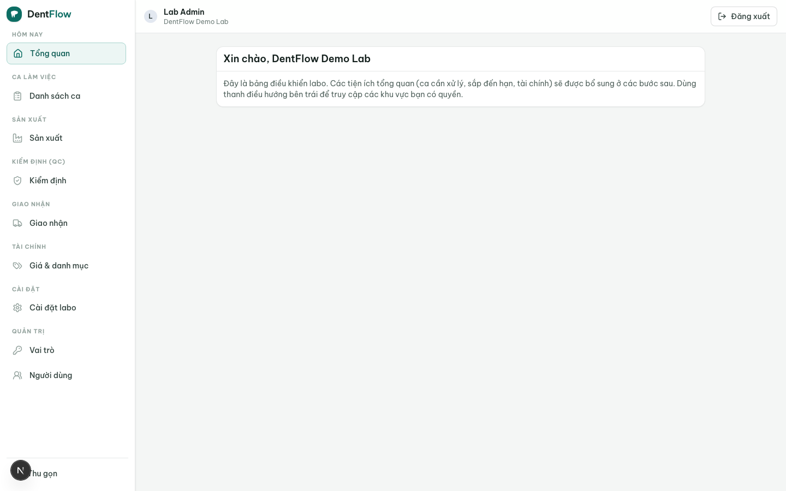

Hướng dẫn cho chủ labo
Chủ labo (lab_admin) là người sở hữu và điều hành xưởng — role chủ được cấp toàn bộ quyền và không sửa được. Trách nhiệm của bạn là đặt nền cho cả hệ thống chạy đúng: cấu hình bảng giá, danh mục vật liệu và công đoạn để mọi đơn tính tiền và chạy sản xuất nhất quán; theo dõi doanh thu, công nợ và năng suất để biết labo đang lời-lỗ ở đâu; mời phòng khám lên hệ thống để mở rộng mạng lưới; và phân quyền cho từng nhân sự. Công cụ chính của bạn là dashboard chủ labo và trang cấu hình.

Công việc từ đầu đến cuối
- Cấu hình lần đầu — khai bảng giá, danh mục vật liệu và công đoạn sản xuất để mọi đơn về sau tính tiền và chạy đúng.
- Mời phòng khám — gửi QR/link cho các phòng khám đối tác để họ bắt đầu đặt đơn, kể cả khi họ chưa dùng DentIQ.
- Phân quyền nhân sự — cấp loginId và gán role (điều phối, technician, QC, giao nhận, kế toán) cho từng người.
- Theo dõi vận hành — mỗi ngày xem dashboard: case đang tắc ở công đoạn nào, doanh thu tháng, công nợ phòng khám nào quá hạn.
- Đọc năng suất & chất lượng — xem báo cáo KPI: sản lượng theo technician, tỉ lệ redo, thời gian mỗi công đoạn để cải tiến.
Cấu hình bảng giá & vật liệu
Đây là bước nền: bảng giá và danh mục vật liệu quyết định mỗi đơn tính tiền thế nào và technician được chọn vật liệu/công đoạn nào. Xem chi tiết ở Bảng giá & vật liệu. Có thể đặt giá riêng cho từng phòng khám nếu cần.
Xem doanh thu, công nợ & năng suất
Toàn bộ số liệu vận hành nội bộ chỉ phía labo thấy — phòng khám không nhìn được hàng đợi, giá vốn hay technician nào làm. Báo cáo KPI cho bạn sản lượng, tỉ lệ redo và thời gian công đoạn; xem Báo cáo & KPI.
Mời phòng khám lên hệ thống
Labo là bên chủ động seeding mạng lưới: mời phòng khám bằng QR/link để họ đặt đơn ngay cả khi chưa có tài khoản. Xem Mời phòng khám.
Phân quyền cho nhân sự
Mỗi labo được seed sẵn bộ role mặc định: chủ labo, điều phối, technician, QC, giao nhận, kế toán. Role chủ toàn quyền và không sửa được; các role khác sửa được. Cấp loginId và gán role đúng cho từng người ở Vai trò & phân quyền.
Làm cấu hình bảng giá và vật liệu trước khi mời phòng khám đặt đơn — nếu chưa có bảng giá, đơn về sẽ không tính tiền đúng và không nuôi công nợ được. Chủ labo là role duy nhất có toàn quyền; hãy gán role hẹp hơn cho nhân sự theo đúng việc họ làm, đừng cấp quyền chủ cho tất cả.
Tips & lưu ý
- Đăng nhập bằng loginId (tên đăng nhập) + mật khẩu, không phải email; mỗi loginId là duy nhất toàn hệ thống.
- Mỗi user thuộc đúng một labo — không có thành viên đa-labo, không chuyển labo.
- Xem dashboard đầu ngày để bắt sớm case tắc ở một công đoạn và công nợ quá hạn.
- Đặt giá riêng cho phòng khám thân thiết nếu cần, nhưng giữ danh mục vật liệu chuẩn để technician và QC đối chiếu được.
- Một user có thể mang nhiều role; ở labo nhỏ, một người có thể vừa điều phối vừa kế toán.